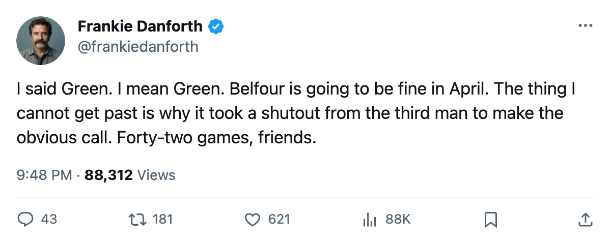
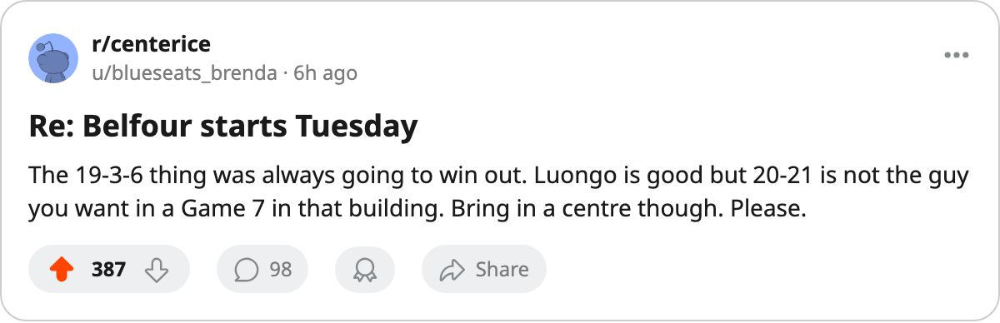

TOR
TORDANFORTH: He's been 19 and 3 for 22 games. You noticed now.
Belfour in net is the right call. The 42 games that had to happen before you made it is the thing that makes me want to throw my program.
 Frankie DanforthColumnist · Queen City Telegram
Frankie DanforthColumnist · Queen City Telegram
Code Green
The Panic Meter sits at Code Green tonight. I said it. Forty-three and ten and four, 100 points, 31 ahead of anyone in my division, and Ed Belfour goes back in the net for a Tuesday night date with a team that has lost five in a row. I am calm. I want that on the record before I say anything else.
Belfour is 19-3-6 with 6 shutouts in 22 games. Nineteen and three. That is not a hot streak. That is a man who was 19 and 3 before you noticed him. The Book has him a point behind  Roberto Luongo97 on overall grade, and everyone who reads the Book knew that before October. But the Book does not tell you who stops the puck in February. The Development Index has told you nothing about Belfour's form because the Index measures deviation from a base, and a man playing 58.1 minutes a night against his base grade of 93 is not moving. He is just winning.
Roberto Luongo97 on overall grade, and everyone who reads the Book knew that before October. But the Book does not tell you who stops the puck in February. The Development Index has told you nothing about Belfour's form because the Index measures deviation from a base, and a man playing 58.1 minutes a night against his base grade of 93 is not moving. He is just winning.
Luongo played 42 games. Twenty wins, twenty-one losses, one shutout. Sixty-one minutes a night, $1.60M, a two-year deal. I do not want to be cruel to a man who is 25 years old and has been a good goaltender. The grade says 94. The grade is right about the grade. But the scoreboard says 20 and 21, and I go by the scoreboard.
What bothers me is the calendar. You needed a shutout from the 23-year-old, a 3-1 win at Montreal, a 5-1 in Washington, a 3-1 over Carolina, and a 1-0 overtime game against the team that leads the Central before you slid the 39-year-old back into the net. Forty-two games of watching Luongo play even hockey while a man who was 19-3 sat on the bench. That is 42 games of a decision deferred, and I am not sure the next coach who gets a call about a Leafs coaching vacancy gets told that is the way things work here.
 New York Islanders is on a five-game losing streak. They scored 185 goals in 60 games.
New York Islanders is on a five-game losing streak. They scored 185 goals in 60 games.  Rick DiPietro88 is at +4 on the Index, which makes him the most interesting thing on that roster this week. This game should be a walk.
Rick DiPietro88 is at +4 on the Index, which makes him the most interesting thing on that roster this week. This game should be a walk.
What is not a walk is what the calendar has as the trade deadline: 23 days. The second centre behind  Mats Sundin92 still is not on this roster. The fourth line is still a tax. The goaltending question, at least, answered itself. I would like the one that costs a draft pick to do the same before the rest of the league figures out that this team wins 1-0 games in April because nobody can score on Belfour in a building where the crowd does not breathe until the clock hits zero.
Mats Sundin92 still is not on this roster. The fourth line is still a tax. The goaltending question, at least, answered itself. I would like the one that costs a draft pick to do the same before the rest of the league figures out that this team wins 1-0 games in April because nobody can score on Belfour in a building where the crowd does not breathe until the clock hits zero.

